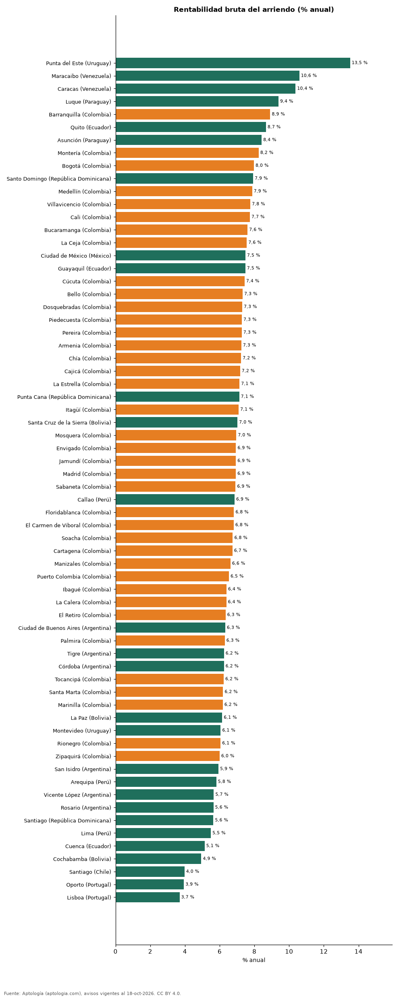

Rentabilidad bruta del arriendo en 66 ciudades de Latinoamérica y Portugal: dónde rinde más comprar para arrendar (octubre 2026)
Estudio con datos abiertos (CC BY 4.0). Versión original: https://github.com/elbroker/aptologia-datos/tree/main/estudios/rentabilidad-bruta-alquiler-ciudades-latinoamerica-2026 · DOI: 10.5281/zenodo.23460712
Comprar un apartamento para arrendarlo rinde más en Punta del Este (Uruguay): una rentabilidad bruta de 13,5 % anual, frente a 3,7 % en Lisboa (Portugal), la más baja. En Bogotá la rentabilidad bruta implícita es 8,0 %; la mediana de las 66 ciudades, 6,9 %.
Resumen: cruzamos el arriendo y el precio de venta por m² de 288.487 apartamentos en 66 ciudades.
Actualizado: 18 de octubre de 2026 (datos del 18 de octubre de 2026) · Próxima actualización: mensual.

Resumen
| Indicador | Valor |
|---|---|
| Mayor rentabilidad bruta | Punta del Este: 13,5 % |
| Menor | Lisboa: 3,7 % |
| Bogotá | 8,0 % |
| Mediana de las ciudades | 6,9 % |
Rentabilidad por ciudad
| País | Ciudad | Rentabilidad bruta | Arriendo USD/m²/mes | Venta USD/m² | Avisos (arriendo / venta) |
|---|---|---|---|---|---|
| Uruguay | Punta del Este | 13,5 % | 40,6 | 3.604 | 1.964 / 4.562 |
| Venezuela | Maracaibo | 10,6 % | 6,7 | 758 | 38 / 62 |
| Venezuela | Caracas | 10,4 % | 12,1 | 1.400 | 326 / 1.464 |
| Paraguay | Luque | 9,4 % | 11,0 | 1.410 | 47 / 74 |
| Colombia | Barranquilla | 8,9 % | 10,6 | 1.424 | 3.694 / 7.532 |
| Ecuador | Quito | 8,7 % | 7,2 | 1.000 | 1.167 / 2.240 |
| Paraguay | Asunción | 8,4 % | 12,9 | 1.843 | 3.560 / 4.612 |
| Colombia | Montería | 8,2 % | 8,0 | 1.168 | 44 / 288 |
| Colombia | Bogotá | 8,0 % | 15,2 | 2.282 | 12.954 / 31.265 |
| República Dominicana | Santo Domingo | 7,9 % | 11,7 | 1.769 | 3.410 / 7.645 |
| Colombia | Medellín | 7,9 % | 15,5 | 2.356 | 20.068 / 20.515 |
| Colombia | Villavicencio | 7,8 % | 8,5 | 1.321 | 74 / 347 |
| Colombia | Cali | 7,7 % | 9,4 | 1.461 | 1.499 / 9.365 |
| Colombia | Bucaramanga | 7,6 % | 9,3 | 1.466 | 416 / 2.439 |
| Colombia | La Ceja | 7,6 % | 11,7 | 1.861 | 354 / 312 |
| México | Ciudad de México | 7,5 % | 18,1 | 2.894 | 4.782 / 7.519 |
| Ecuador | Guayaquil | 7,5 % | 8,5 | 1.364 | 1.231 / 915 |
| Colombia | Cúcuta | 7,4 % | 6,9 | 1.116 | 298 / 561 |
| Colombia | Bello | 7,3 % | 10,5 | 1.716 | 1.082 / 2.319 |
| Colombia | Dosquebradas | 7,3 % | 8,9 | 1.456 | 70 / 607 |
| Colombia | Piedecuesta | 7,3 % | 7,0 | 1.151 | 57 / 246 |
| Colombia | Pereira | 7,3 % | 10,5 | 1.728 | 1.530 / 4.376 |
| Colombia | Armenia | 7,3 % | 10,1 | 1.675 | 337 / 2.278 |
| Colombia | Chía | 7,2 % | 10,5 | 1.737 | 489 / 1.507 |
| Colombia | Cajicá | 7,2 % | 10,7 | 1.782 | 385 / 1.517 |
| Colombia | La Estrella | 7,1 % | 12,0 | 2.023 | 489 / 561 |
| República Dominicana | Punta Cana | 7,1 % | 15,0 | 2.525 | 93 / 442 |
| Colombia | Itagüí | 7,1 % | 12,6 | 2.126 | 908 / 2.012 |
| Bolivia | Santa Cruz de la Sierra | 7,0 % | 7,3 | 1.241 | 947 / 1.679 |
| Colombia | Mosquera | 7,0 % | 9,0 | 1.548 | 167 / 817 |
| Colombia | Envigado | 6,9 % | 15,4 | 2.656 | 7.303 / 5.735 |
| Colombia | Jamundí | 6,9 % | 6,5 | 1.125 | 107 / 466 |
| Colombia | Madrid | 6,9 % | 6,5 | 1.134 | 259 / 475 |
| Colombia | Sabaneta | 6,9 % | 12,9 | 2.237 | 3.868 / 4.375 |
| Perú | Callao | 6,9 % | 6,5 | 1.146 | 31 / 121 |
| Colombia | Floridablanca | 6,8 % | 9,2 | 1.626 | 357 / 919 |
| Colombia | El Carmen de Viboral | 6,8 % | 8,0 | 1.406 | 102 / 90 |
| Colombia | Soacha | 6,8 % | 6,0 | 1.066 | 128 / 566 |
| Colombia | Cartagena | 6,7 % | 13,9 | 2.469 | 2.008 / 5.774 |
| Colombia | Manizales | 6,6 % | 9,8 | 1.776 | 282 / 2.788 |
| Colombia | Puerto Colombia | 6,5 % | 10,0 | 1.843 | 90 / 144 |
| Colombia | Ibagué | 6,4 % | 7,1 | 1.332 | 249 / 1.217 |
| Colombia | La Calera | 6,4 % | 9,8 | 1.833 | 51 / 139 |
| Colombia | El Retiro | 6,3 % | 15,5 | 2.929 | 541 / 618 |
| Argentina | Ciudad de Buenos Aires | 6,3 % | 13,5 | 2.558 | 4.316 / 8.128 |
| Colombia | Palmira | 6,3 % | 6,9 | 1.318 | 42 / 112 |
| Argentina | Tigre | 6,2 % | 16,0 | 3.080 | 151 / 121 |
| Argentina | Córdoba | 6,2 % | 9,4 | 1.813 | 216 / 188 |
| Colombia | Tocancipá | 6,2 % | 5,9 | 1.145 | 94 / 264 |
| Colombia | Santa Marta | 6,2 % | 14,1 | 2.740 | 674 / 3.779 |
| Colombia | Marinilla | 6,2 % | 9,1 | 1.775 | 107 / 164 |
| Bolivia | La Paz | 6,1 % | 5,6 | 1.099 | 298 / 462 |
| Uruguay | Montevideo | 6,1 % | 15,3 | 3.040 | 3.702 / 4.466 |
| Colombia | Rionegro | 6,1 % | 11,8 | 2.337 | 3.179 / 3.023 |
| Colombia | Zipaquirá | 6,0 % | 6,9 | 1.372 | 168 / 819 |
| Argentina | San Isidro | 5,9 % | 15,0 | 3.032 | 148 / 181 |
| Perú | Arequipa | 5,8 % | 5,8 | 1.207 | 46 / 583 |
| Argentina | Vicente López | 5,7 % | 17,0 | 3.600 | 168 / 157 |
| Argentina | Rosario | 5,6 % | 8,9 | 1.895 | 129 / 33 |
| República Dominicana | Santiago | 5,6 % | 6,8 | 1.442 | 116 / 594 |
| Perú | Lima | 5,5 % | 10,0 | 2.185 | 4.134 / 9.331 |
| Ecuador | Cuenca | 5,1 % | 5,3 | 1.238 | 176 / 331 |
| Bolivia | Cochabamba | 4,9 % | 4,0 | 971 | 91 / 366 |
| Chile | Santiago | 4,0 % | 10,6 | 3.189 | 7.098 / 6.247 |
| Portugal | Oporto | 3,9 % | 19,1 | 5.820 | 78 / 607 |
| Portugal | Lisboa | 3,7 % | 25,8 | 8.383 | 491 / 1.548 |
Rentabilidad bruta = arriendo mediano por m² × 12 ÷ precio de venta mediano por m², ambos de apartamentos de la misma ciudad.
Preguntas frecuentes
¿En qué ciudad de Latinoamérica rinde más comprar para arrendar? En Punta del Este (Uruguay), con una rentabilidad bruta implícita de 13,5 % anual.
¿Cuánto renta un apartamento en arriendo en Bogotá? La rentabilidad bruta implícita es 8,0 % anual, antes de administración, impuestos, vacancia y mantenimiento.
¿Qué es la rentabilidad bruta? El arriendo de un año dividido por el precio de compra, sin descontar gastos. La neta suele ser 1 a 3 puntos menor.
Metodología
- Fuente: exportes nocturnos de la base de datos de Aptología (aptologia.com) del 18 de octubre de 2026: avisos vigentes de vivienda en portales inmobiliarios de 13 países, recogidos por Aptología y vistos en línea entre el 11 y el 18 de octubre de 2026. Corte: 18 de octubre de 2026.
- Depuración: se eliminan duplicados exactos (misma ciudad, zona, tipo, precio, moneda, área, habitaciones y baños) y los precios fuera del percentil 1–99 de cada país, operación, moneda y tipo; el precio por m² usa solo avisos con área declarada entre 12 y 2.000 m² y también se recorta al P1–P99.
- Qué se mide: precios pedidos (publicados), no precios de cierre. En arriendo, el canon mensual sin administración, gastos comunes ni condominio.
- Muestra mínima: cada cifra publicada se apoya en al menos 30 avisos; las celdas con menos se omiten.
- Monedas: nunca se mezclan avisos de monedas distintas sin convertirlos. Conversión a dólares con la tasa de mercado de ExchangeRate-API (open.er-api.com, actualización del 18 Oct 2026): 1 USD = 3.182,80 COP, 1 USD = 18,47 M.N, 1 USD = 5,09 BRL, 1 USD = 3,44 PEN, 1 USD = 982,44 CLP, 1 USD = 1.514,57 ARS, 1 USD = 40,20 UYU, 1 USD = 5.705,37 PYG, 1 USD = 61,27 DOP, 1 USD = 0,89 EUR, 1 USD = 11,72 BOB; la UF chilena a 41.178,64 CLP (mindicador,cl. 18-oct-2026). Los avisos publicados en dólares se usan tal cual.
- Rentabilidad bruta: arriendo mediano por m² × 12 / precio mediano de venta por m² (apartamentos), por ciudad. Compara medianas de dos ofertas distintas: es una aproximación, no la rentabilidad de un inmueble concreto. En Argentina los arriendos suelen publicarse en pesos y las ventas en dólares; la conversión usa la tasa oficial citada.
- Limitaciones: la cobertura depende de los portales que recorre Aptología en cada país y es mayor en las ciudades grandes y en los segmentos medio-alto y alto; el área es la que declara el aviso, sin verificar; los nombres de zona vienen de los portales.
- Privacidad: solo se publican agregados; no se publica ningún dato personal, enlace a avisos ni nombre de anunciante.
- Datos abiertos: datos.csv, licencia CC BY 4.0.
Cómo citar
Pinzón Pineda, D. M. (2026). Rentabilidad bruta del arriendo en 66 ciudades de Latinoamérica y Portugal: dónde rinde más comprar para arrendar (octubre 2026). Aptología (aptologia.com). https://github.com/elbroker/aptologia-datos/tree/main/estudios/rentabilidad-bruta-alquiler-ciudades-latinoamerica-2026. Datos: datos.csv, licencia CC BY 4.0.